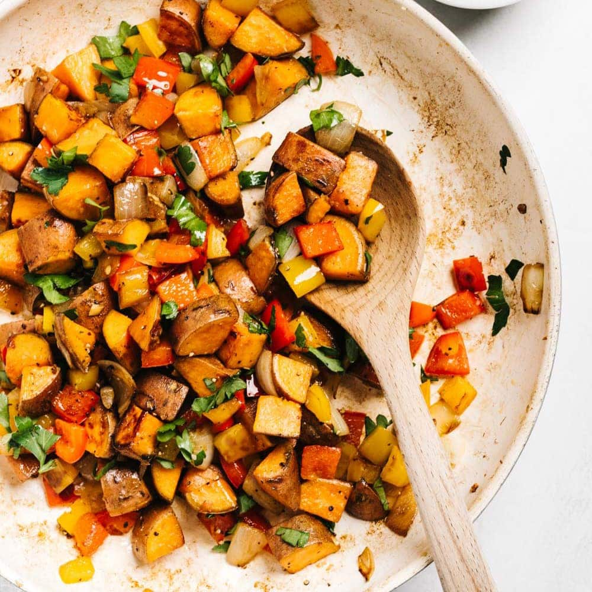

Sweet Potato Hash

Warm fall flavors are always comforting. I love to use sweet potatoes in my cooking.
This is a fantastic dish for both breakfast and dinner!
Ingredients
- Canola oil or any other high smoke point oil
- 2 sweet potatoes, cut into 1/2 inch cubes
- 1 green bell pepper, diced
- 1 medium onion, diced
- 1 lb breakfast sausage
- 3 cloves minced garlic
- salt and pepper to taste
- 1/2 teaspoon red pepper flakes
- 1/2 teaspoon nutmeg
- 2 tablespoons maple syrup
Steps
- Heat oil in pan over medium high heat, add sweet potatoes, bell pepper, onion, and garlic. Season with salt, pepper, red pepper flakes, and nutmeg. Cook until potatoes can be pierced with a fork.
- At the same time, brown breakfast sausage in a separate pan.
- Combine sausage with vegetable hash. Add maple syrup and continue to heat while combining. Enjoy!
Return to Home